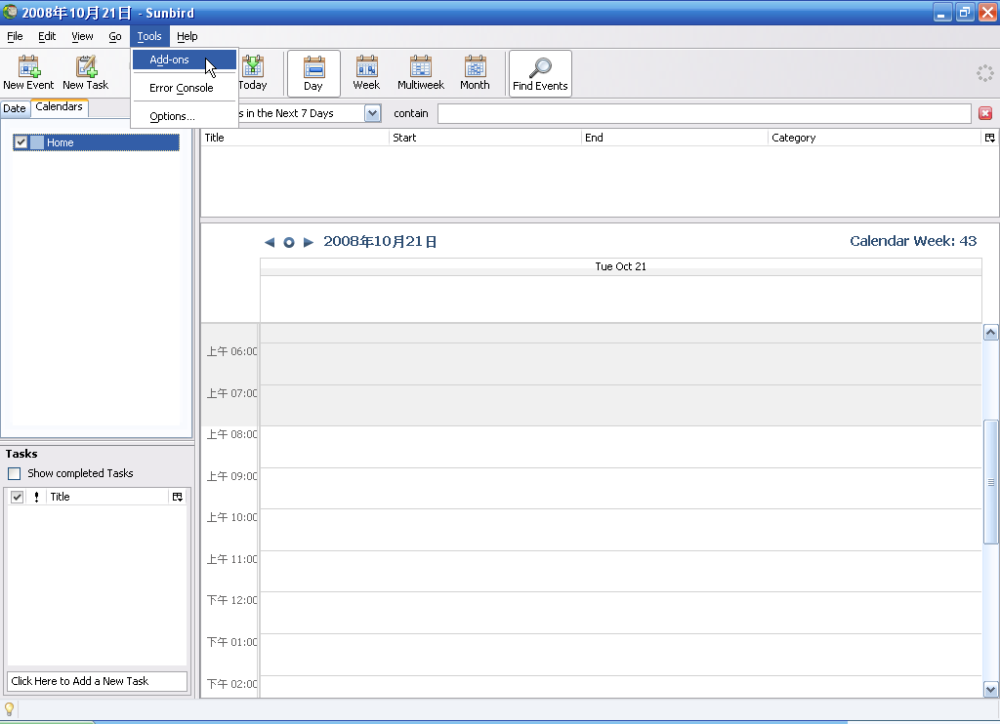
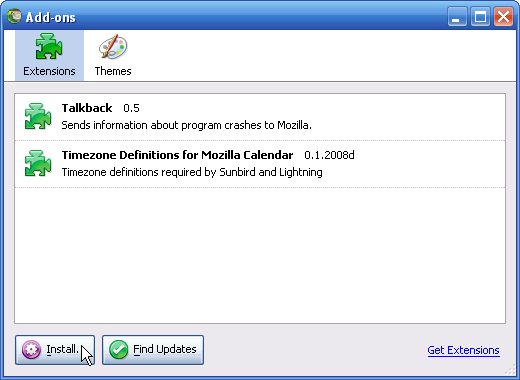
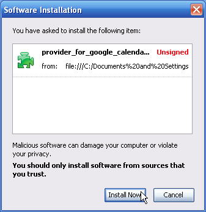
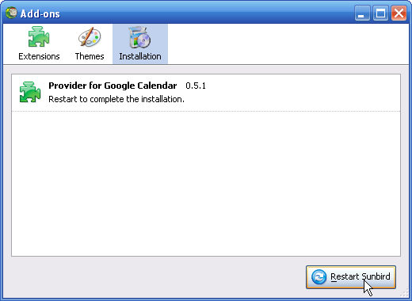
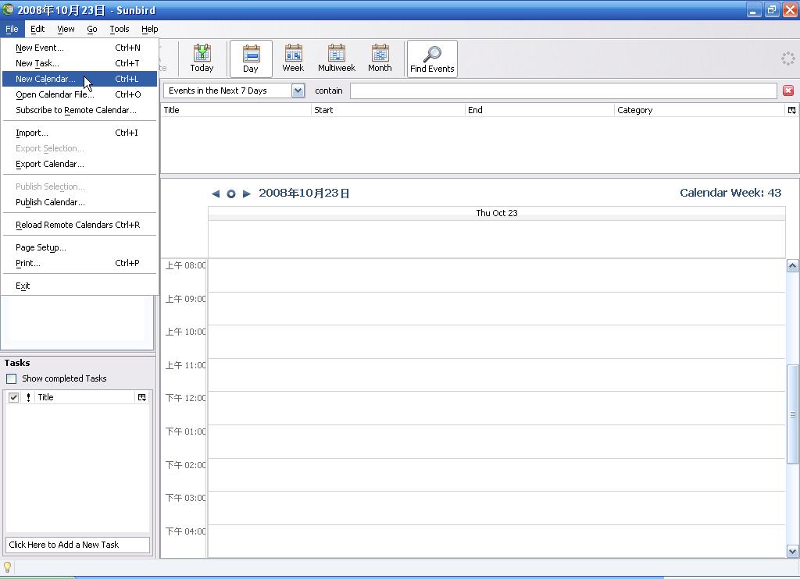
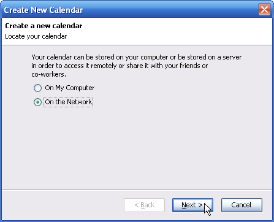
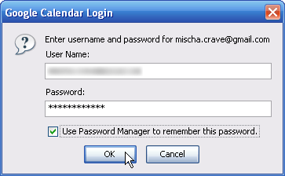
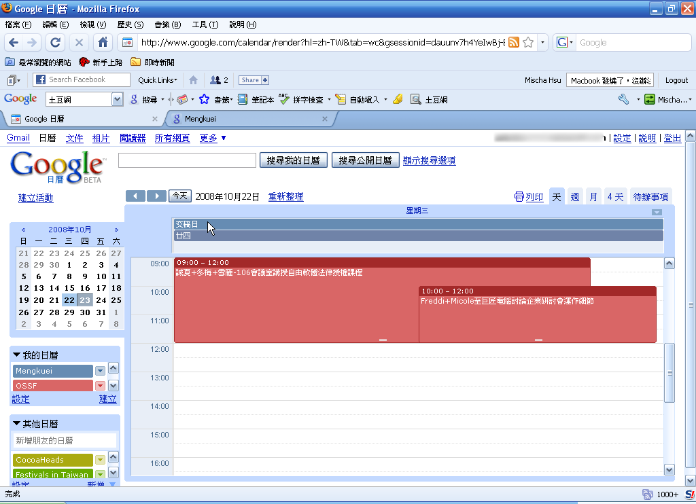

用 Sunbird 同步 Google Calendar - 讓你隨時隨地管理自己的行程

雖然 Google Calendar 這種行事曆網路應用軟體已經非常方便，不過有時還是希望它能和我的單機行事曆軟體同步，提供網路斷線時的不時之需。而 Sunbird 這個開放源碼行事曆軟體就能透過簡單的方式，與 Google Calendar 雙向同步，讓你不論在外使用行動網路管理網路行事曆應用軟體，還是在家使用單機行事曆，都能維持一致的工作時程。
| Software Profile
* 軟體名稱：Mozilla Sunbird |
安裝所需外掛
要使用 Sunbird 雙向同步 Google Calendar，除了要安裝 Sunbird 之外，我們還需要 Sunbird 外掛程式 Provider for Google Calendar，來讓 Sunbird 有和 Google Calendar 雙向同步的能力。
| Software Profile
* 軟體名稱：Provider for Google Calendar |
到以上網路下載 Provider for Google Calendar 後，第一步當然是要把這個外掛安裝到 Sunbird 上。首先我們先開始 Sunbird，並選擇【Tools】->【Add-ons】。

然後在「Add-ons」視窗按一下〔Install ...〕按鈕。

接著找到你剛剛下載的 Provider for Google Calendar 外掛，選擇後在〔開啟〕按鈕上按一下滑鼠左鍵。
「Software Installation」視窗跳出後，請在倒數完後按一下〔Install Now〕按鈕。

安裝完成後，按一下〔Restart Sunbird〕重新開啟 Sunbird，你就完成了 Provider for google Calender 外掛的安裝。

讓 Google Calender 和 Sunbird 雙向同步
接下來我們就要讓 Google Calendar 和 Sunbird 雙向同步，讓你不論在網路應用程式，還是單機程式，都能管理同一個行事曆。首先我們先進入要與 Sunbird 同步的 Google Calendar 行事曆設定頁面，然後在最底下，我們可以看見「私人網址」區域，在其中的〔XML〕按鈕上按一下滑鼠左鍵。
接著你會看到「私人網址」視窗彈出，其中包含這個行事曆的私人網址，請複製這個網址。
然後在 Sunbird 中選擇【File】->【New Calendar】，新增一個行事曆。

首先要我們要先選擇將這個行事曆儲存在網路上，請點選「On the Network」選項後，按一下〔Next >〕按鈕。

接著在下一個畫面中，在「Format」區域中選擇「Google Calendar」選項，並將剛剛複製的私人網路貼入「Location」區域，然後按一下〔Next >〕按鈕。
這時 Sunbird 會提示你輸入 Google Calendar 的使用者名稱和密碼，請在輸入後，按一下〔OK〕按鈕。

然後在下一個畫面中，你可以給予這個行事曆一個名稱，並選擇它出現在 Sunbird 中所要使用的顏色，選好相應的選項後，請按一下〔Next >〕按鈕。
這樣我們就完成了 Sunbird 和 Google Calendar 雙向同步的設定，你可以試著在 Sunbird 中建立一個行事曆項目。
然後你就可以在 Google Calendar 中看到你剛剛在 Sunbird 中建立的項目，反之亦然。

使用單機軟體與網路行事曆同步的好處是，你可以在自己的電腦留一份備份，以防斷線時，無法讀取你的行事曆。而另一個好處則是只要你在外面有網路，你就可以隨時連回自己的網路行事曆新增或修改項目，而不需在回家時另外再修改單機軟體上的行事曆，讓你擁有更多管理行事曆的彈性方式。